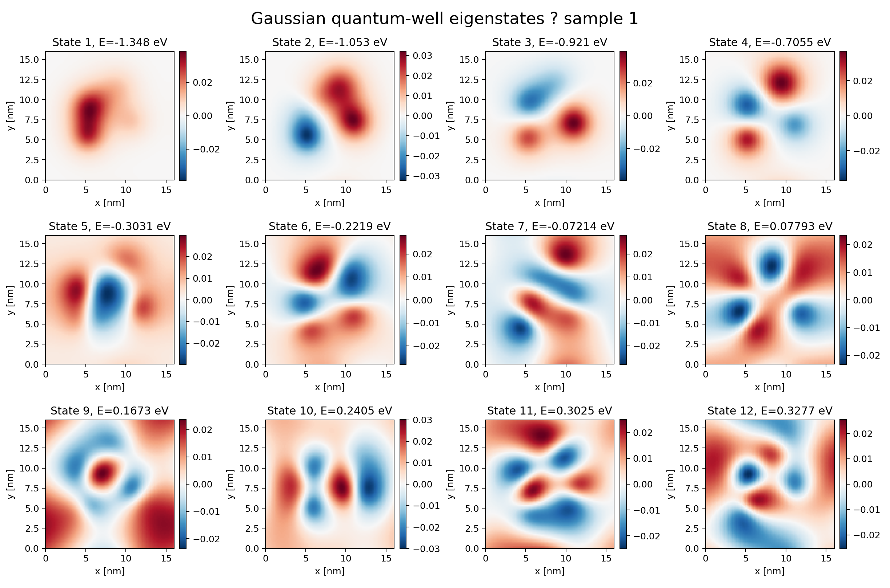
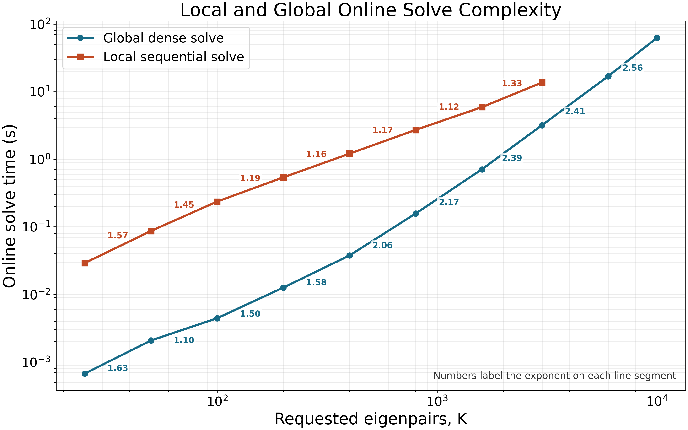
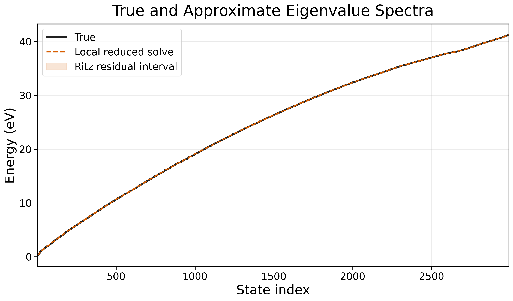
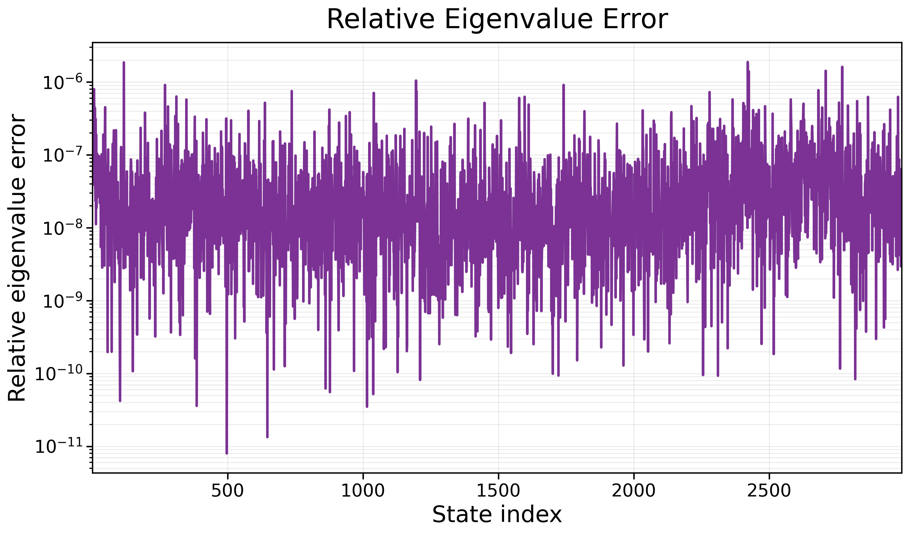

Model-order reduction · Quantum simulation · Eigensolvers
Scaling quantum reduced-order models to thousands of states.
A new statewise POD-Galerkin workflow designed for quantum problems where one or two low-energy states are not enough—and computing a large portion of the spectrum is the real task.
Research context
Learn a smaller space without discarding the physics.
Solving the Schrödinger equation on a fine spatial grid produces a large matrix eigenvalue problem. Direct numerical simulation is accurate, but repeating that solve for many device configurations can be expensive.
Clarkson’s POD-Galerkin workflow replaces the full grid with a basis learned from previously computed wavefunctions. Proper orthogonal decomposition identifies recurring spatial patterns in those training solutions; Galerkin projection then expresses the Schrödinger operator inside that much smaller space.
The approach remains physics-guided: data chooses a compact basis, but the governing Hamiltonian determines the reduced eigenproblem. Earlier work by Ming-Cheng Cheng and collaborators demonstrated this idea for quantum wells and element-based nanostructures.
Example states
What the solver is trying to preserve.
Each eigenstate is a signed spatial wavefunction. Higher states develop more nodes and finer structure, so a reduced model must preserve an increasingly diverse family of patterns—not merely approximate the ground state.

My contribution
Replace one growing global solve with a sequence of local ones.
The traditional workflow collects all retained POD modes into one global reduced Hamiltonian. Requesting more eigenstates therefore enlarges one dense matrix whose diagonalization becomes progressively more expensive.
Build a dedicated POD basis Φj from the training snapshots associated with eigenstate family j.
Solve states sequentially rather than diagonalizing one reduced matrix large enough to contain the full requested spectrum.
For state j, construct a coefficient-space nullspace that enforces orthogonality to all wavefunctions already accepted.
Diagonalize the constrained Hamiltonian inside the current state’s small POD space and keep its lowest Ritz pair.
Use overlap, residual, ordering, and ambiguity diagnostics to keep nearby or nearly degenerate states aligned.
Keep the expensive Hamiltonian work local while the requested number of eigenstates grows into the thousands.
Scaling evidence
The growth rate bends in the right direction.
In the current benchmark, the global dense solver remains faster in absolute time at 3,000 states. Its cost, however, grows much more steeply: the measured edge exponent rises above 2, while the statewise sequential method stays near 1.1–1.3 through the tested high-state regime.

Accuracy milestone
Thousands of states, checked against DNS.
A 3,000-state run on a 5×5 square quantum-well system was compared state by state with direct numerical simulation. The clean validation scope includes states 1–2990; a matching disagreement begins at state 2991, so the final ten states are intentionally excluded below.
validation scope
energy error
DNS overlap
within scope


Current status: these are research-development benchmarks, not a finalized performance study. The scaling comparison and 5×5 accuracy run use preserved server outputs with their validated plotting scope.
What comes next
Turn improved scaling into a robust solver.
The next work is concentrated at the difficult end of the spectrum: improving state tracking near ambiguous and nearly degenerate eigenpairs, reducing the remaining selection cost, and extending matched DNS validation cleanly through all 3,000 requested states.
The core result is already visible: organizing the reduced model around individual state families changes how the online solve scales, creating a viable path toward quantum calculations that require many eigenstates.
Active research: source code and full server artifacts are currently maintained in a private research repository.